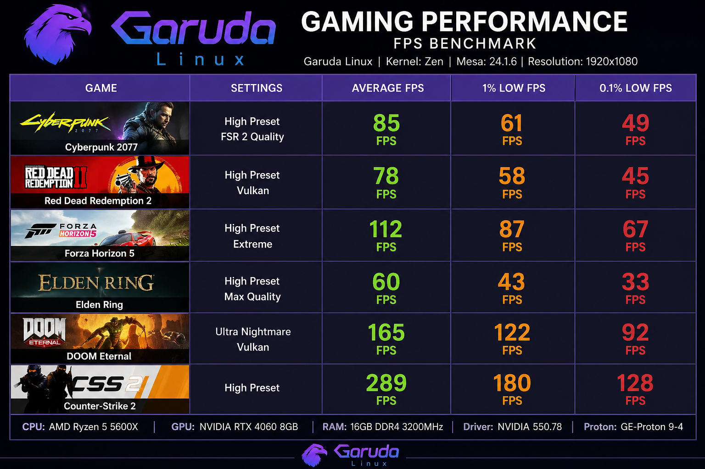

.png)

¿Qué es? Garuda Linux
Garuda Linux es una distribución basada en Arch Linux que se destaca por su enfoque en el rendimiento, personalización y estética. Combina la velocidad de Arch con una experiencia visual completa, herramientas de sistema y ajustes útiles para gaming, multimedia y uso diario.
¿Por qué esta distro?
Garuda no es solo rápido, es muy personalizable. Ofrece una experiencia visual potente, snapshots con Btrfs y utilidades gráficas para administrar el sistema sin perder control.
Características principales
Rendimiento del Sistema
Garuda incluye kernels optimizados, drivers recientes y herramientas de rendimiento. Esto ayuda en juegos, tareas multimedia, compilaciones y cargas que necesitan buena respuesta.
Estética Impresionante
Garuda es conocido por su diseño visual excepcional. Temas personalizados, iconos elegantes y una interfaz oscura que es fácil en los ojos. Tu escritorio será una obra de arte.
Velocidad de Arch
Como distribución basada en Arch, Garuda ofrece actualizaciones rolling-release y la última tecnología. Además, incluye optimizaciones específicas que la hacen aún más rápida que Arch puro.
Herramientas Preinstaladas
Garuda viene listo para usar. Incluye utilidades para gestionar kernels, snapshots, drivers, rendimiento y aplicaciones comunes sin depender solo de la terminal.
Comunidad Apasionada
Detrás de Garuda hay una comunidad activa de usuarios de Linux. Encontrarás soporte, guías y documentación para personalización, rendimiento y mantenimiento del sistema.
Altamente Personalizable
KDE Plasma como entorno de escritorio te da libertad total para personalizar cada aspecto. Ajusta colores, efectos, atajos de teclado y crea tu experiencia perfecta.
Rendimiento y Recuperación
Sistema Genérico
Manual
Ajustes y snapshots por cuenta propia
Garuda Linux
Listo
Herramientas, rendimiento y Btrfs integrados